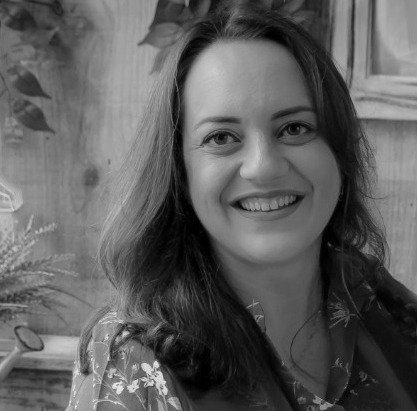
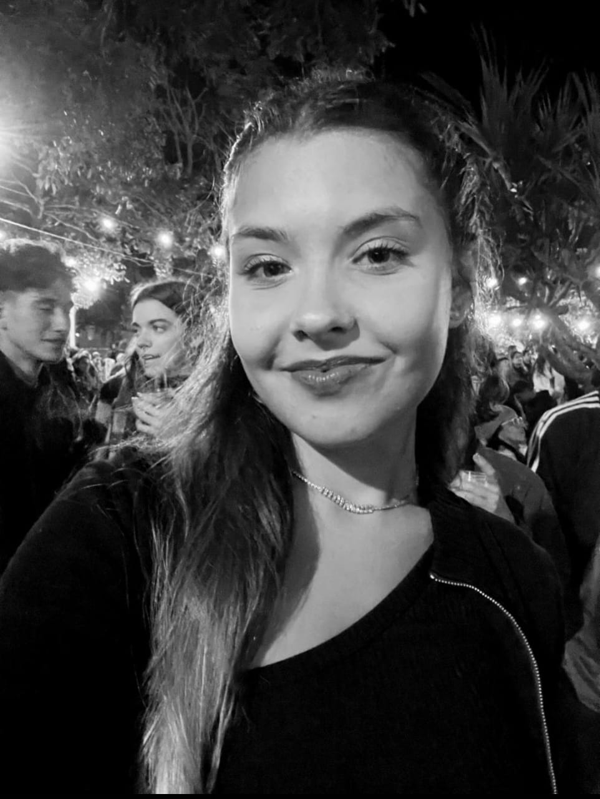
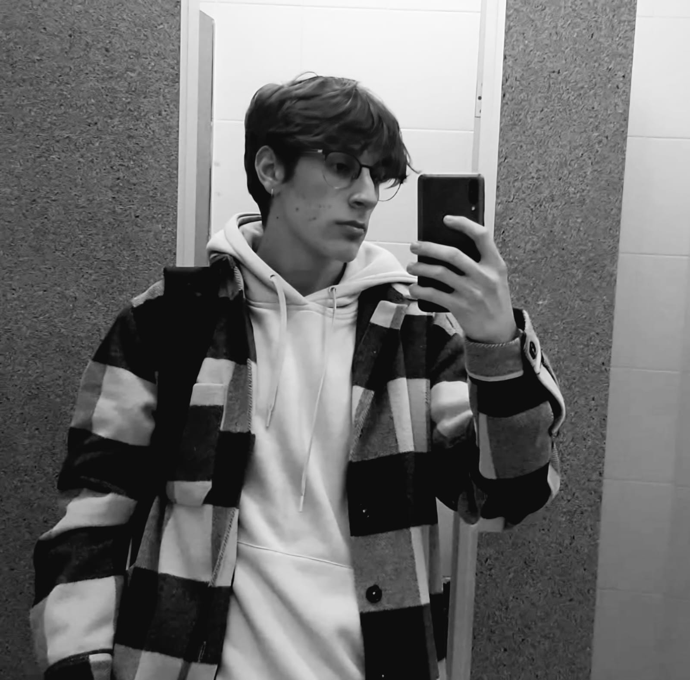

Equipe do projeto
Pesquisadores

Luana Gusma - Coordenadora do projeto
Professora Pesquisadora.
Professora Pesquisadora.

Eloiza Santana - Pesquisadora - bolsista - Aluna do curso Técnico Integrado ao Ensino Médio em Informática - IFSC-Garopaba.
Aluna do curso Técnico Integrado ao Ensino Médio em Informática - IFSC-Garopaba.
Participar do projeto foi bem desafiador, foi necessário muita dedicação tanto acadêmica quanto pessoal. Como parte da equipe de pesquisa e estando responsável pelo desenvolvimento do site, minha principal responsabilidade foi transformar o conhecimento e as historias coletadas durante a pesquisa em uma plataforma digital acessível e interativa. O meu principal desafio, foi trazer o contexto original das lendas e a essência do projeto ao ambiente digital. Além disso, foi fundamental garantir que o site fosse intuitivo e pudesse ser facilmente navegado por pessoas de diferentes idades e níveis de familiaridade com a tecnologia. Chegar ao fim do projeto e ver o site funcionando foi uma experiência extremamente gratificante. Saber que o meu trabalho contribuiu para a valorização dessas histórias foi minha maior recompensa.
Aluna do curso Técnico Integrado ao Ensino Médio em Informática - IFSC-Garopaba.
Participar do projeto foi bem desafiador, foi necessário muita dedicação tanto acadêmica quanto pessoal. Como parte da equipe de pesquisa e estando responsável pelo desenvolvimento do site, minha principal responsabilidade foi transformar o conhecimento e as historias coletadas durante a pesquisa em uma plataforma digital acessível e interativa. O meu principal desafio, foi trazer o contexto original das lendas e a essência do projeto ao ambiente digital. Além disso, foi fundamental garantir que o site fosse intuitivo e pudesse ser facilmente navegado por pessoas de diferentes idades e níveis de familiaridade com a tecnologia. Chegar ao fim do projeto e ver o site funcionando foi uma experiência extremamente gratificante. Saber que o meu trabalho contribuiu para a valorização dessas histórias foi minha maior recompensa.

Gabriel - Pesquisador - bolsista - Aluno do curso Técnico Integrado ao Ensino Médio em Administração - IFSC-Garopaba.
Participar desse projeto de pesquisa me permitiu me conectar melhor com aquilo que está do nosso lado, mas que muitas vezes não percebemos. É sensacional observar como um povo pode contar sua história por meio de contos e lendas.
Participar desse projeto de pesquisa me permitiu me conectar melhor com aquilo que está do nosso lado, mas que muitas vezes não percebemos. É sensacional observar como um povo pode contar sua história por meio de contos e lendas.
.jpg)
Maria Julia - Pesquisadora - bolsista - Aluna do curso Técnico Integrado ao Ensino Médio em Informática - IFSC-Garopaba.
Eu diria que fazer as ilustrações e as fotografias foram um tanto complicadas, pois não conhecia nenhum dos contos em que ilustrei, mas tentei, através da arte, trazer o máximo de fidelidade aos contos e as fotos tiradas e editadas por mim, dos lugares de alguns contos. Para mim é de extrema importância participar deste projeto pois além de compartilhar as lendas também posso compartilhar de minha arte.
Eu diria que fazer as ilustrações e as fotografias foram um tanto complicadas, pois não conhecia nenhum dos contos em que ilustrei, mas tentei, através da arte, trazer o máximo de fidelidade aos contos e as fotos tiradas e editadas por mim, dos lugares de alguns contos. Para mim é de extrema importância participar deste projeto pois além de compartilhar as lendas também posso compartilhar de minha arte.